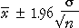

Intervalle de confiance à la moyenne (écart-type connu)
Au début de ce chapitre, nous avons développé un intervalle de confiance à 95% pour une moyenne de population, μ, quand l'écart-type, σ, est une valeur connue. Ce fut de la forme

Nous avons montré que les intervalles de cette forme ont probabilité de 0.95 contenant la moyenne de population, μ.
Modification de la constante de 1.96
Nous avons ensuite généraliser à considérer estimations par intervalle de la forme

où k peut prendre des valeurs autres que 1.96.
Lorsque k devient plus petit, les intervalles deviennent plus étroites afin qu'ils aient une probabilité plus faible de μ, y compris — en d'autres termes, le niveau de confiance devient plus faible. La relation entre k et le niveau de confiance est déterminé par la distribution normale standard,
Le tableau ci-dessous donne quelques exemples de k et le niveau de confiance qui en résulte.
| k | Le niveau de confiance |
|---|---|
| 1 | 0.683 |
| 2 | 0.954 |
| 3 | 0.997 |
| 1.645 | 0.90 |
| 1.960 | 0.95 |
| 2.576 | 0.99 |
Bien que les intervalles de confiance à 95% sont les plus fréquemment rapportés, parfois k est choisi pour donner un 90% ou un intervalle de confiance de 99%.
Simulation
Le diagramme ci-dessous montre un échantillon aléatoire d'une population normale avec μ = 12 et σ = 2.
Cliquez accumuler et prendre environ 50 échantillons. Maintenant, utilisez le curseur pour régler la constante k.
Estimation d'une probabilité avec différents niveaux de confiance
Un intervalle de confiance à 95% pour une probabilité, π, a la forme

Les deux constantes dans cette formule à nouveau est née de la distribution normale standard. Son remplacement par 1.645 donne un intervalle d'environ un niveau de confiance de 90%, et en utilisant 2.576 résultats dans un niveau de confiance de 99%.
Estimation d'une moyenne de la population (écart-type inconnu)
Lorsque l'écart type de population, σ, est inconnu, un intervalle de confiance à 95% pour μ est de la forme

où tn-1 est obtenu à partir d'une table. Changer le niveau de confiance à 90% ou 99% implique de changer cette constante. La valeur appropriée peut à nouveau être obtenue à partir d'un tableau. (Nous donnons aucun autre détail ici.)